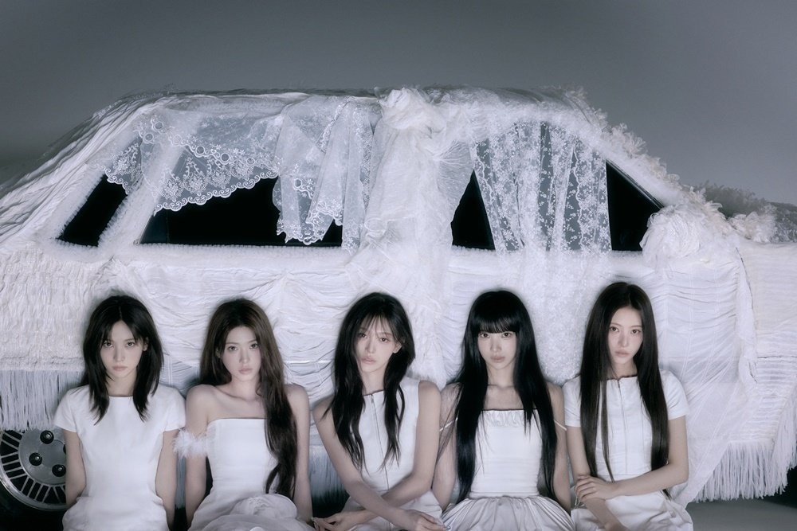
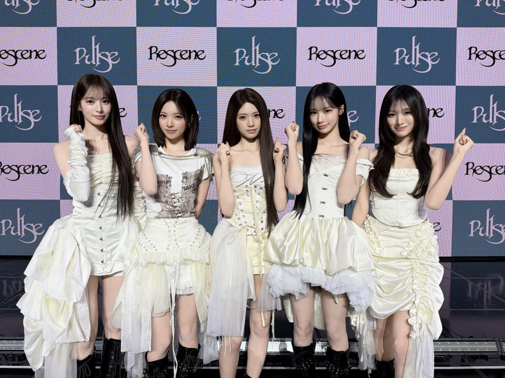
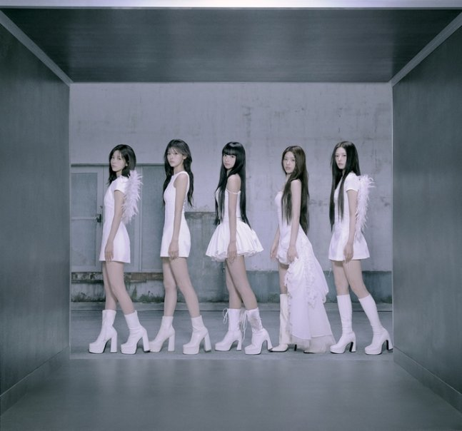
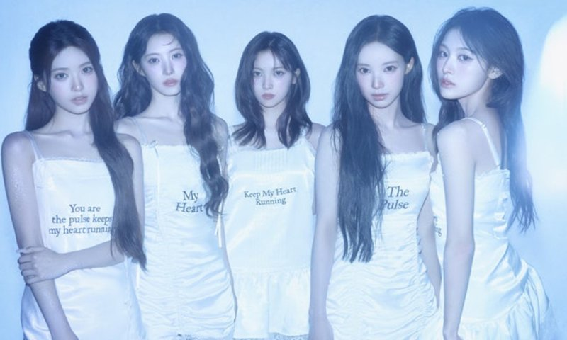
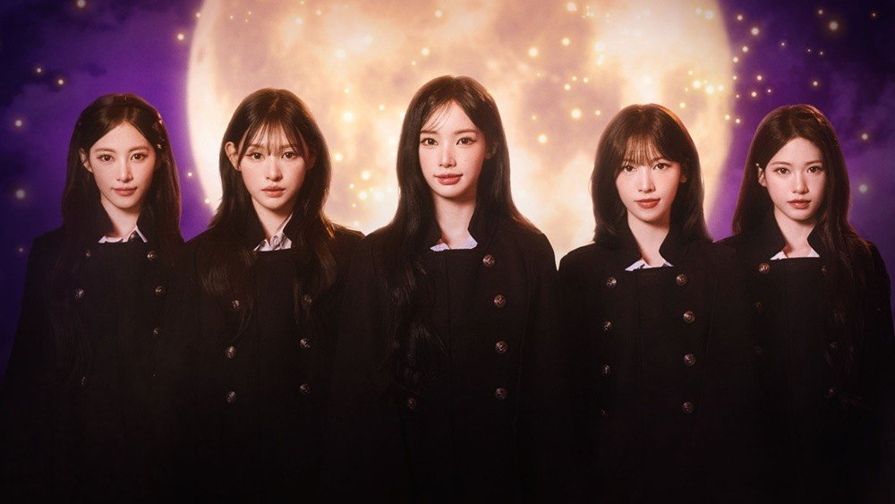
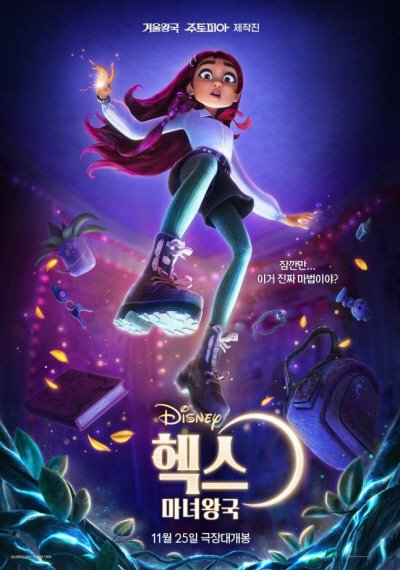
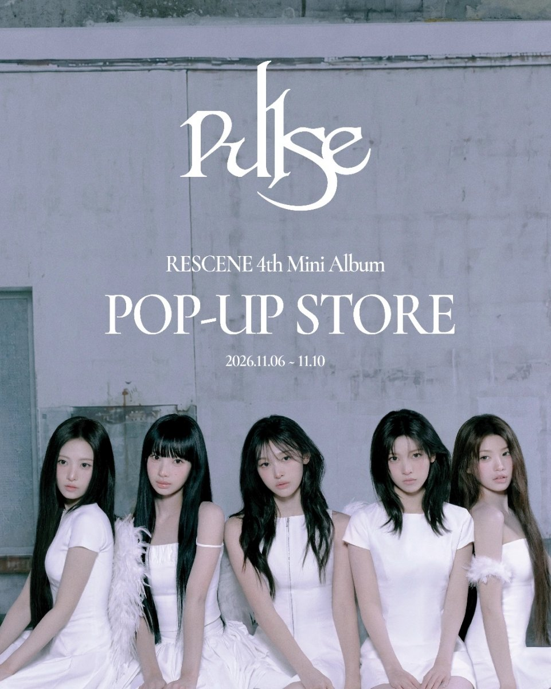

역주행으로 이름을 알린 그룹에게는 숙제가 하나 남아요. 새 노래도 처음부터 통하느냐는 거죠. 리센느는 11월 3일 미니 4집 'PULSE'로 컴백해 그 숙제에 답했어요. 이번 활동에서 무엇이 달라졌는지, 어디서 만날 수 있는지 정리했어요.
📷 사진 1 자리
▲ 미니 4집 'PULSE' 콘셉트 사진 속 리센느 · 사진=더뮤즈엔터테인먼트 제공
발매 2시간 만에 1위, 이번엔 수록곡까지
타이틀곡 'With'는 발매 2시간 만에 멜론 TOP100과 HOT100에서 1위에 올랐어요. 지난번처럼 시간이 지나 차트를 거슬러 오른 게 아니라, 나오자마자 꼭대기에 선 거예요.
📷 사진 2 자리
▲ 미니 4집 'PULSE' 쇼케이스 무대에 선 리센느 · 사진=더뮤즈엔터테인먼트 제공
더 눈여겨볼 건 수록곡이에요. 'Finest Thing', '백화요란(Inside Out)', 'MEME', 'Dragon' 네 곡도 멜론 TOP100 10위 안에 들었어요. HOT100에서는 수록곡 다섯 곡이 1위부터 5위까지 나란히 섰고요. 타이틀곡 한 곡이 아니라 앨범이 통째로 올라온 셈이죠.
📷 사진 3 자리
▲ 미니 4집 'PULSE' 콘셉트 사진 · 사진=더뮤즈엔터테인먼트 제공
'With'에 담은 것, 심장 박동과 '남길 것'
앨범 이름 'PULSE'는 심장 박동이라는 뜻이에요. 앨범 전체가 이 심장 박동을 주제로 묶여 있어요.
▶ 영상 1 자리
소속사 더뮤즈엔터테인먼트의 김혜수 이사는 버클리 출신으로, 리센느의 음악 작업에도 참여해 왔어요. 지난 7월에는 멤버들과 MBC '전지적 참견 시점'에 함께 나오기도 했죠.
김 이사는 발매 뒤 SNS에 긴 글을 남겼어요. 이번 앨범은 "무엇을 더 보여줄 것인가보다 무엇을 남길 것인가"에 집중했고, "이번 앨범은 그 모든 마음에 대한 대답"이라고 적었어요. 기록해 주고 사랑해 주는 사람들이 곁에 있다는 게 큰 축복이라는 말도 덧붙였고요.
📷 사진 4 자리
▲ 미니 4집 'PULSE' 콘셉트 사진 · 사진=더뮤즈엔터테인먼트 제공
디즈니 엔딩곡부터 성수 팝업까지
'With'는 디즈니 애니메이션 '헥스: 마녀왕국'의 엔딩크레딧 곡으로도 쓰여요. 디즈니 영화 엔딩크레딧에 국내 걸그룹 노래가 오르는 건 처음이에요. 영화는 11월 25일 개봉하니, 엔딩까지 자리를 지키면 극장에서 이 노래를 들을 수 있어요.
📷 사진 5 자리
▲ 디즈니 애니메이션 '헥스: 마녀왕국' 협업 이미지 속 리센느 · 사진=월트디즈니 컴퍼니 코리아 제공
앨범 분위기를 직접 느껴 보고 싶다면 팝업스토어가 있어요. 11월 6일부터 10일까지 닷새 동안 서울 성수동 연무장길 플레이엑스에서 열려요.
📷 사진 6 자리
▲ 11월 25일 개봉하는 디즈니 애니메이션 '헥스: 마녀왕국' 포스터 · 사진=더뮤즈엔터테인먼트 제공
블루 쉬폰 커튼과 레이스 조명으로 꾸민 전시 구역 다섯 곳에 청음존, 하트 모양 핀을 쓰는 볼링 체험, 멤버들에게 메시지를 남기는 공간이 마련돼요. 굿즈 공간도 따로 있어요.
📷 사진 7 자리
▲ 11월 6~10일 성수동 플레이엑스에서 열리는 리센느 'PULSE' 팝업스토어 포스터 · 사진=플레이엑스스튜디오 제공
짧은 리뷰
'PULSE'는 리센느의 네 번째 미니앨범이에요. 심장 박동을 주제로 타이틀곡 'With'와 'Finest Thing', '백화요란(Inside Out)', 'MEME', 'Dragon' 등을 담았어요.
볼거리는 수록곡이 고르게 사랑받았다는 점이에요. 다섯 곡이 HOT100 상위 다섯 자리를 모두 채웠으니, 타이틀곡만 듣고 넘기기엔 아까운 앨범이에요.
역주행으로 리센느를 처음 알게 된 분, 타이틀곡 말고도 들을 곡을 찾는 분께 권해요.
✍️ 내 생각 자리 — 직접 본 소감·관점 2~3줄로 바꿔 주세요
리센느는 이번에 역주행 대신 발매 2시간 만의 1위와 수록곡 1~5위로 답했어요. 팝업은 11월 6~10일 성수동 플레이엑스, '헥스: 마녀왕국'은 11월 25일 개봉이에요.






